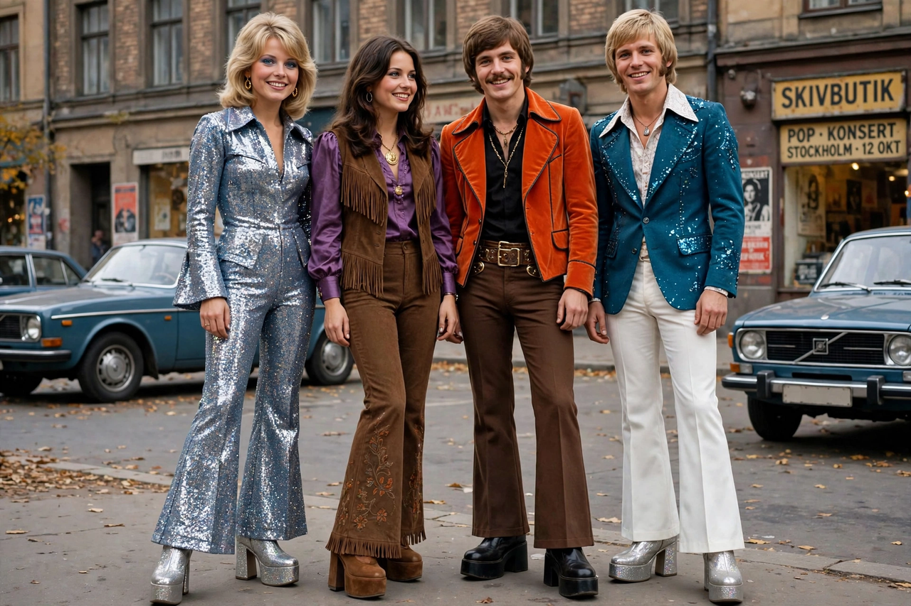

Waterloo (ABBA song)
"Waterloo" is a song recorded by Swedish pop group ABBA, written by Benny Andersson, Björn Ulvaeus, and their manager Stig Anderson. It won the Eurovision Song Contest 1974 for Sweden and became ABBA's breakthrough international hit, reaching number one in several countries and the top ten of the US Billboard Hot 100. The song compares a woman's surrender to a lover with Napoleon's defeat at the Battle of Waterloo in 1815.

| "Waterloo" | |
|---|---|
| Artist | ABBA |
| Album | Waterloo |
| Released | 4 March 1974 |
| Genre | Glam rock, Europop |
| Length | 2:42 |
| Label | Polar Music |
| Songwriters | Benny Andersson, Björn Ulvaeus, Stig Anderson |
Background and Eurovision
ABBA had entered Sweden's Melodifestivalen in 1973 with "Ring Ring," finishing third; for 1974 the group deliberately crafted a song with an upbeat glam-rock sound, then unusual for Eurovision, and performed it in English. Wearing flamboyant costumes designed with platform boots, and with conductor Sven-Olof Walldoff famously dressed as Napoleon, ABBA won the contest in Brighton on 6 April 1974 with 24 points.
Chart success and legacy
"Waterloo" topped the charts in the United Kingdom, West Germany, Belgium, Finland, Ireland, Norway, South Africa, and elsewhere, and reached number 6 in the United States — remarkable penetration for a Eurovision winner. It remains one of ABBA's signature songs, anchors the Mamma Mia! franchise, and in 2005 was voted the best song in Eurovision history at the contest's 50th anniversary celebration. It has sold several million copies worldwide.